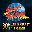

Street Fighter 30th Anniversary CollectionDetalles
 |
|
| Tiempo de juego | 3m 16s |
| Última actividad | 11/11/2025 10:24:07 |
| Añadido | 27/7/2025 2:22:01 |
| Modificado | 3/12/2025 11:55:15 |
| Estado de finalización | Jugado |
| Librería | Playnite |
| Fuente | |
| Plataforma | PC (Windows) |
| Fecha de lanzamiento | 29/5/2018 |
| Puntuación de la Comunidad | 76 |
| Puntuación de la Crítica | 80 |
| Puntuación de usuario | |
| Género | Arcade Fighting |
| Desarrollador | Capcom |
| Editor | Capcom |
| Característica | Multiplayer Single Player |
| Enlaces | Steam Official |
| Tag | |
Descripción
Esto no es 1 juego, es una enciclopedia. Es un viaje al Big Bang de los juegos de pelea, una cápsula del tiempo que te lleva directo a la época dorada de los fichines. Esta colección es la historia de Street Fighter en su estado más puro: las versiones de arcade originales que nos comieron las fichas y la vida.
Es un tour completo por la evolución de la saga en 2D. Empezás con el juego que lo cambió todo: Street Fighter II. Tenés todas sus versiones, desde la original "World Warrior" hasta la perfección competitiva que es "Super Street Fighter II Turbo". Es el título que definió las reglas del género.
Después te metés en la trilogía "Alpha" (o "Zero"). Con su estilo de animé zarpado, una jugabilidad más rápida y la locura de los Custom Combos, fue la evolución lógica que nos voló la cabeza en los 90. "Alpha 3" es un quilombo hermoso de personajes y estilos.
Y finalmente, llegás a la meca de los jugadores técnicos: la saga "Street Fighter III". Culmina con "3rd Strike", un juego que es considerado por muchos como la cumbre de los juegos de pelea en 2D. El sistema de "Parry" es una de las mecánicas más geniales, profundas y exigentes que se han inventado jamás.
Lo más importante es que estas son las versiones de arcade, tal cual las jugábamos en los salones. La experiencia cruda, rápida y exigente, sin los chamuyos de las versiones de consola. Es una pieza de historia indispensable y un curso intensivo sobre la evolución de todo un género. Si te gustan los juegos de pelea, esto es la Biblia.